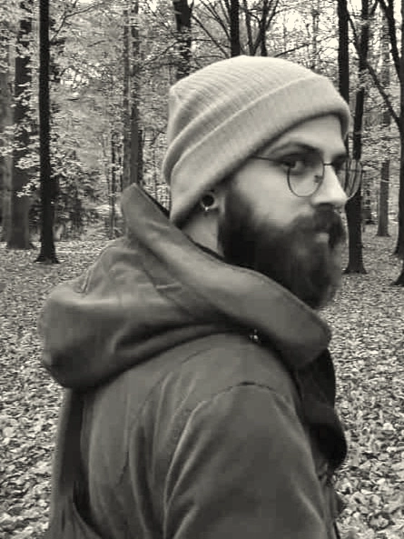

Artifacts Recordings
Production | Mixing | Mastering

About Me ~
I'm Dario, an audio engineer and sound designer based in Florence, Italy. I specialize in mixing and mastering, helping artists bring clarity, depth, and emotion to their music.
My approach combines technical precision with a strong focus on the artist's vision. Whether it's a raw track or a polished production, I work to make each mix translate perfectly across all systems.